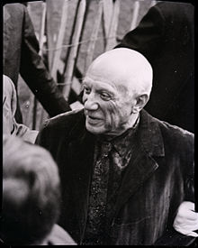
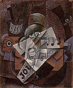

At the time of Picasso's death many of his paintings were in his possession, as he had kept off the art market what he did not need to sell. In addition, Picasso had a considerable collection of the work of other famous artists, some his contemporaries, such as Henri Matisse, with whom he had exchanged works. Since Picasso left no will, his death duties (estate tax) to the French state were paid in the form of his works and others from his collection. These works form the core of the immense and representative collection of the Musée Picasso in Paris. In 2003, relatives of Picasso inaugurated a museum dedicated to him in his birthplace, Málaga, Spain, the Museo Picasso Málaga.
The Museu Picasso in Barcelona features many of his early works, created while he was living in Spain, including many rarely seen works which reveal his firm grounding in classical techniques. The museum also holds many precise and detailed figure studies done in his youth under his father's tutelage, as well as the extensive collection of Jaime Sabartés, his close friend and personal secretary.
Several paintings by Picasso rank among the most expensive paintings in the world. Garçon à la pipe sold for US$104 million at Sotheby's on 4 May 2004, establishing a new price record. Dora Maar au Chat sold for US$95.2 million at Sotheby's on 3 May 2006.[79] On 4 May 2010, Nude, Green Leaves and Bust was sold at Christie's for $106.5 million. The 1932 work, which depicts Picasso's mistress Marie-Thérèse Walter reclining and as a bust, was in the personal collection of Los Angeles philanthropist Frances Lasker Brody, who died in November 2009.[80] On 11 May 2015 his painting Women of Algiers set the record for the highest price ever paid for a painting when it sold for US$179.3 million at Christie's in New York.[81]
On 21 June 2016 a painting by Pablo Picasso titled Femme Assise (1909) sold for £43.2 million ($63.4 million) at Sotheby's London, exceeding the estimate by nearly $20 million, setting a world record for the highest price every payed at auction for a Cubist work.[82][83]
As of 2004, Picasso remained the top-ranked artist (based on sales of his works at auctions) according to the Art Market Trends report.[84] More of his paintings have been stolen than any other artist's;[85] the Art Loss Register has 550 of his works listed as missing.[86]
The Picasso Administration functions as his official Estate. The US copyright representative for the Picasso Administration is the Artists Rights Society.[87]
In the 1996 movie Surviving Picasso, Picasso is portrayed by actor Anthony Hopkins.[88] Picasso is also a character in Steve Martin's 1993 play, Picasso at the Lapin Agile.
In "A Moveable Feast" by Ernest Hemingway, Hemingway tells Gertrude Stein that he would like to have some Picassos, but cannot afford them. Later in the book, Hemingway mentions looking at one of Picasso's paintings. He refers to it as Picasso's nude of the girl with the basket of flowers. Presumably, he is talking about "Young Naked Girl with Flower Basket".
Picasso was exceptionally prolific throughout his long lifetime. The total number of artworks he produced has been estimated at 50,000, comprising 1,885 paintings; 1,228 sculptures; 2,880 ceramics, roughly 12,000 drawings, many thousands of prints, and numerous tapestries and rugs.[71]
The medium in which Picasso made his most important contribution was painting.[72] In his paintings, Picasso used color as an expressive element, but relied on drawing rather than subtleties of color to create form and space.[72] He sometimes added sand to his paint to vary its texture. A nanoprobe of Picasso's The Red Armchair (1931) by physicists at Argonne National Laboratory in 2012 confirmed art historians' belief that Picasso used common house paint in many of his paintings.[73] Much of his painting was done at night by artificial light.
,_cut_and_pasted_colored_paper,_gouache_and_charcoal_on_paperboard,_43.5_x_33_cm,_Scottish_National_Gallery_of_Modern_Art,_Edinburgh.jpg)
Picasso's early sculptures were carved from wood or modeled in wax or clay, but from 1909 to 1928 Picasso abandoned modeling and instead made sculptural constructions using diverse materials.[72] An example is Guitar (1912), a relief construction made of sheet metal and wire that Jane Fluegel terms a "three-dimensional planar counterpart of Cubist painting" that marks a "revolutionary departure from the traditional approaches, modeling and carving".[74]
From the beginning of his career, Picasso displayed an interest in subject matter of every kind,[75] and demonstrated a great stylistic versatility that enabled him to work in several styles at once. For example, his paintings of 1917 included the pointillist Woman with a Mantilla, the Cubist Figure in an Armchair, and the naturalistic Harlequin (all in the Museu Picasso, Barcelona). In 1919, he made a number of drawings from postcards and photographs that reflect his interest in the stylistic conventions and static character of posed photographs.[76] In 1921 he simultaneously painted several large neoclassical paintings and two versions of the Cubist composition Three Musicians (Museum of Modern Art, New York; Philadelphia Museum of Art).[38] In an interview published in 1923, Picasso said, "The several manners I have used in my art must not be considered as an evolution, or as steps towards an unknown ideal of painting ... If the subjects I have wanted to express have suggested different ways of expression I have never hesitated to adopt them."[38]
Although his Cubist works approach abstraction, Picasso never relinquished the objects of the real world as subject matter. Prominent in his Cubist paintings are forms easily recognized as guitars, violins, and bottles.[77] When Picasso depicted complex narrative scenes it was usually in prints, drawings, and small-scale works; Guernica (1937) is one of his few large narrative paintings.[76]
Picasso painted mostly from imagination or memory. According to William Rubin, Picasso "could only make great art from subjects that truly involved him ... Unlike Matisse, Picasso had eschewed models virtually all his mature life, preferring to paint individuals whose lives had both impinged on, and had real significance for, his own."[78] The art critic Arthur Danto said Picasso's work constitutes a "vast pictorial autobiography" that provides some basis for the popular conception that "Picasso invented a new style each time he fell in love with a new woman".[78] The autobiographical nature of Picasso's art is reinforced by his habit of dating his works, often to the day. He explained: "I want to leave to posterity a documentation that will be as complete as possible. That's why I put a date on everything I do."[78]